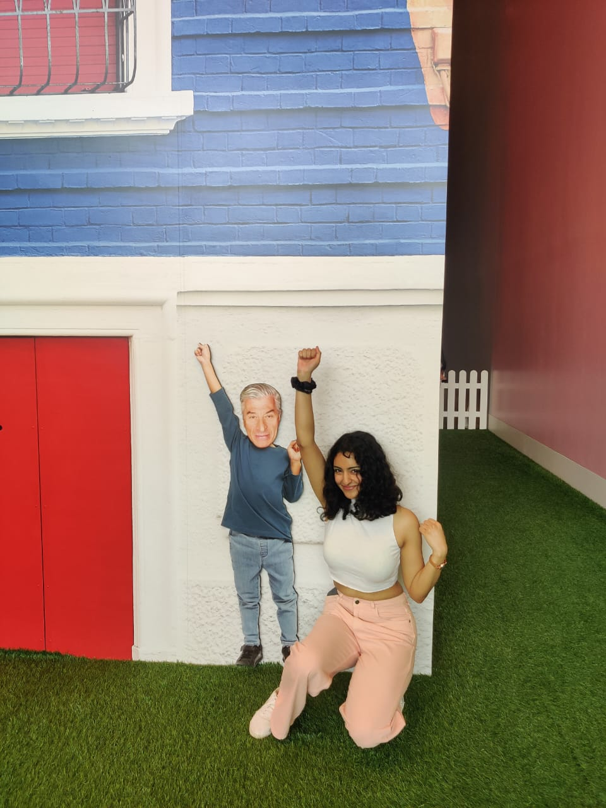
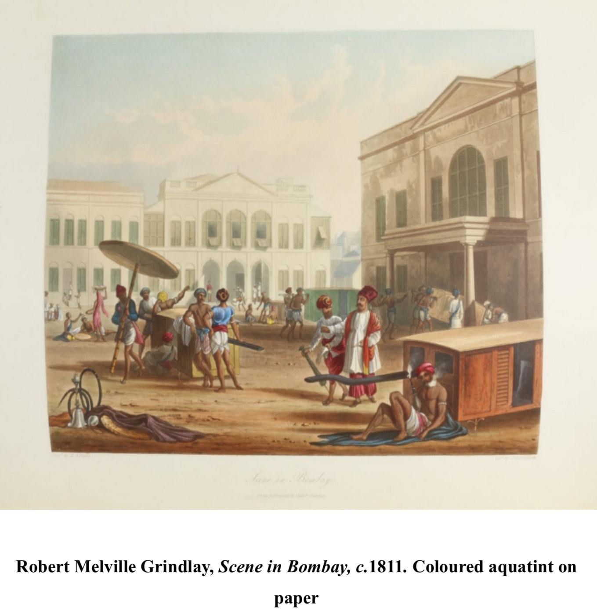
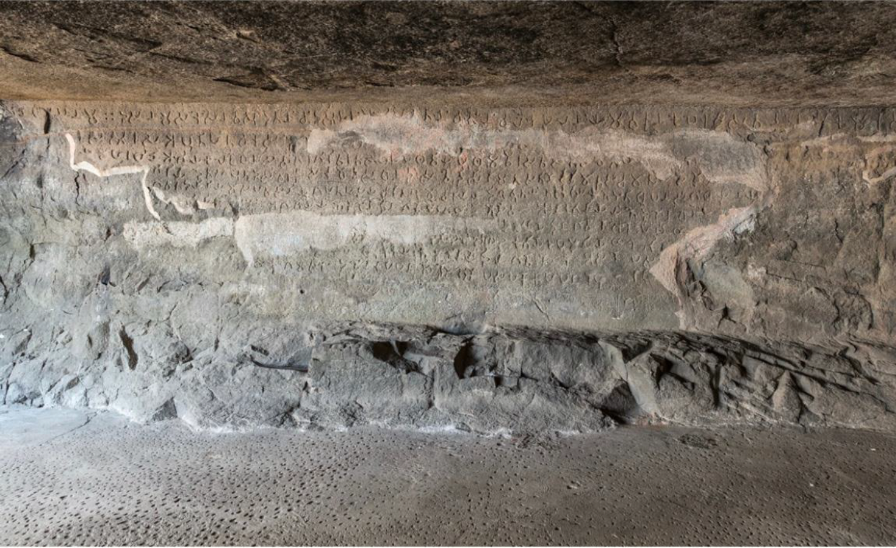
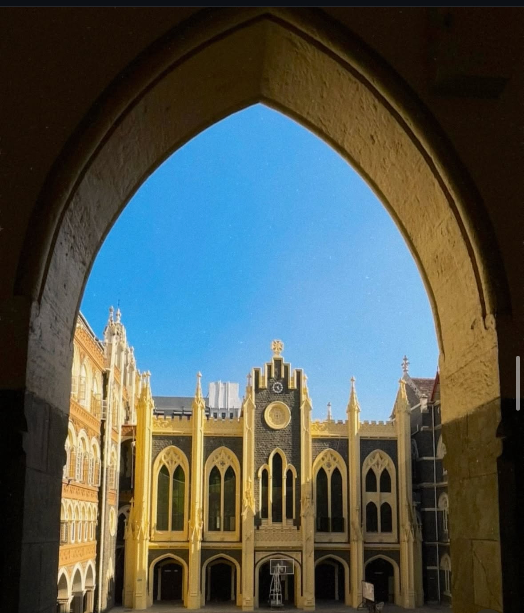
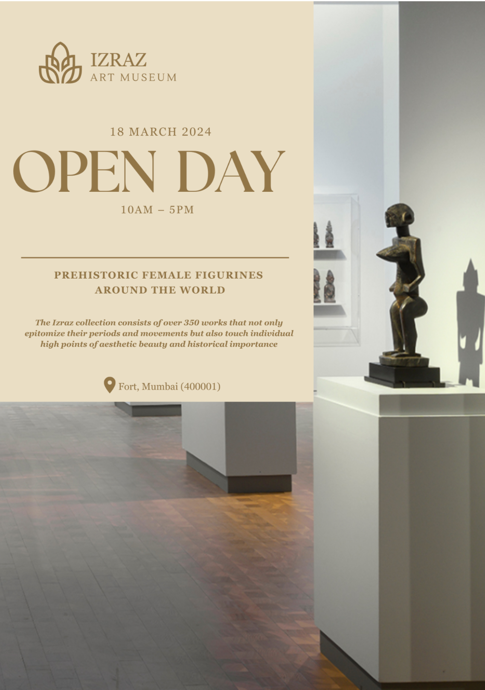
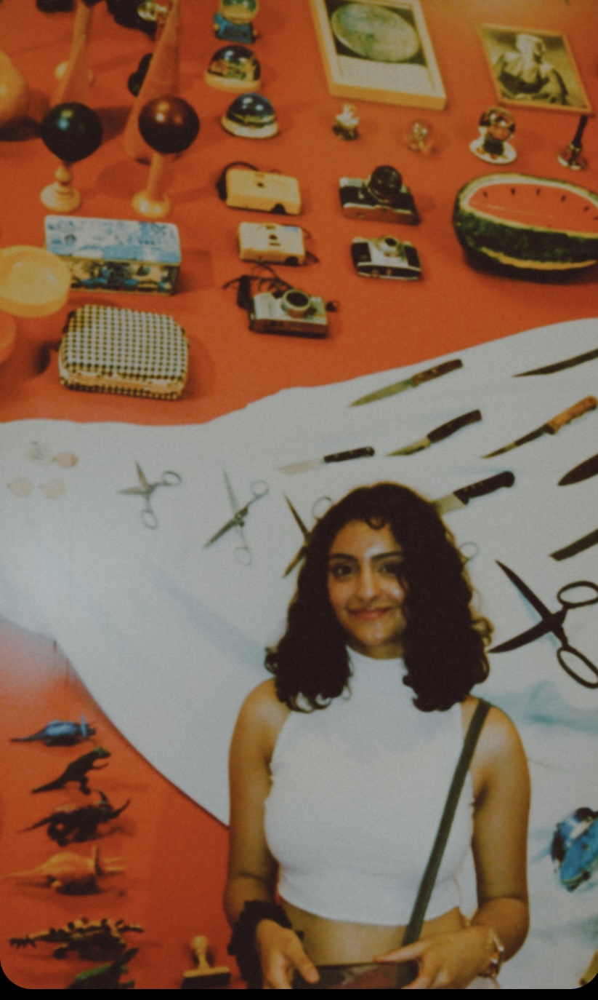

Piecing together
the stories
of our past.
I’m Mishthi Mahajan. I explore the connections between people, places, and the material traces they leave behind.
Explore my work ↓
Art & archives
Objects & inscriptions
People & environments
Selected work
Current research
Associate Researcher
The Earth News · Jammu, India
Historiography · Political memory
Gulab Singh and the Political Life of Historiographical Condemnation
Examining competing historical interpretations of Gulab Singh and their role in public memory.
Explore ongoing research ↗Historical research
Reading the past through images, objects, and inscriptions.
3 projects
Economic narratives in art
Tracing Mumbai’s economic transformation through European paintings.
View project
Mughal coin hoard of Patur
Photographing and cataloguing 3,600 Mohurs from the Surat mint.
View project
Naneghat inscription of Naganika
Reading royal identity, ritual, and changing letterforms at Naneghat.
View projectHeritage in practice
Documenting, conserving, and interpreting cultural heritage.
2 projects
St. Xavier’s conservation plan
A 68-page action plan informed by field surveys and material analysis.
View project
IZRAZ Art Museum
A 55-page museum proposal covering collections, conservation, and visitor experience.
View project
About me
I currently work as an Associate Researcher at The Earth News in Jammu, India.
My academic path began at the University of Delhi in History and Political Science and deepened at St. Xavier’s College, Mumbai, where I specialised in Ancient Indian History.
I bring together perspectives from archaeology, economics, ecology, and culture to reveal more layered historical narratives.
I aim to pursue a PhD in Environmental History, focusing on resource extraction and the ecological, cultural, and economic dimensions of human–environment relations.
Beyond research, you’ll find me trekking, experimenting in the kitchen, or exploring books that change how I see the world.